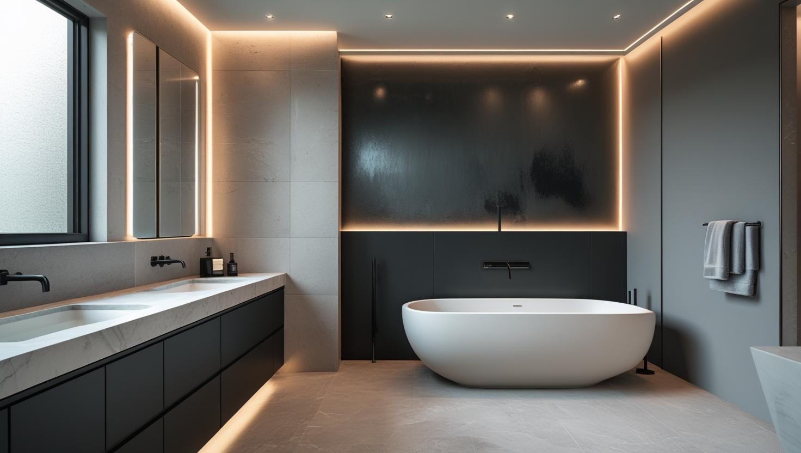
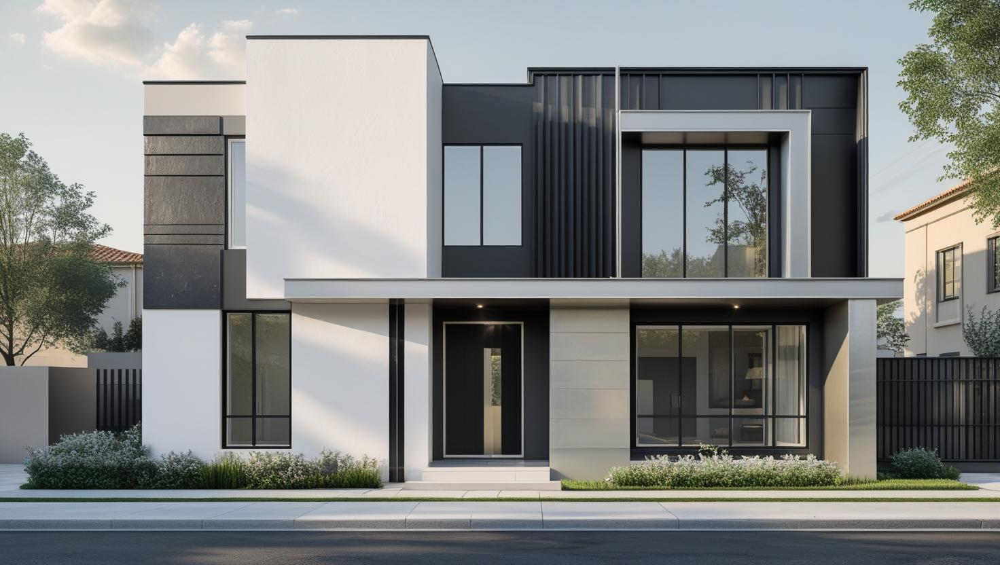
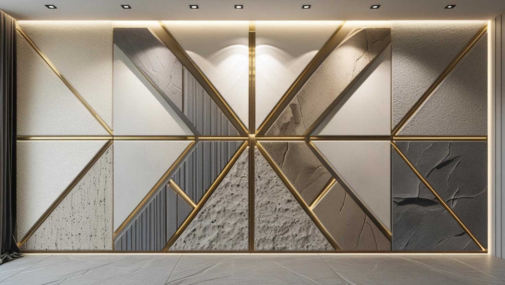

İstanbul Bahçelievler Profesyonel Boya Ustası
Bahçelievler'in çok katlı apartmanlarında daire, merdiven boşluğu ve dış cephe boyası; Şirinevler ve Yenibosna'daki iş yerlerinde iç mekan yenilemesi. 20 yıllık tecrübemizle eski katmanları ve tamir ihtiyacını keşifte görüp teklife yazıyoruz.
Bahçelievler'de Boya Badana: Orta Yaşlı Apartman Stoğu
Bahçelievler boyacı aramalarının arkasında ağırlıkla orta yaşlı, çok katlı apartman stoğu var. Bu binalarda duvarlar genellikle klasik sıva üzerine yıllar içinde birkaç kat boya almış durumda; yeni uygulamadan önce eski katmanın durumu belirleyici oluyor.
Üst üste binmiş eski boya katmanları kabarma ve soyulma eğilimi gösterebiliyor. Bu yüzeylerde doğrudan boyamak yerine raspa ve düzeltme yapmak, işin bir yıl sonra tekrarlanmasını önlüyor. Bahçelievler boya ustası ararken tekliflerin bu kalemi kapsayıp kapsamadığını sorun.
İlçede daire boyamanın yanında dükkân ve küçük ofis işleri de talep ediliyor; iş yerlerinde çalışmayı mesai dışına alabiliyoruz.
Hizmetlerimiz

İç Mekan Boyama
Orta yaşlı apartman dairelerinde iç boyaya geçmeden önce tavandaki çatlaklara, ıslak hacim çevresine ve eski katmanın sağlamlığına bakılır. Bahçelievler'de kapı, pervaz ve kartonpiyerin işe dahil olup olmadığı teklifte ayrıca yazılır.
- Tavan çatlağı ve dökülme onarımı
- Banyo ve mutfakta neme uygun boya
- Pervaz ve iç kapı boyası
- Eski katmanda raspa ve astar

Dış Cephe Boyama
Ana caddeye bakan cephelerde biriken toz ve is, boyadan önce yıkanarak temizlenmezse yeni boyanın tutunmasını zayıflatır. Bahçelievler'in çok katlı binalarında balkon altı, saçak ve çatı kenarı gibi su alan noktalar da ayrıca onarılır.
- Cephe yıkama ve is temizliği
- Balkon altı ve saçak onarımı
- Kat malikleri için kalem kalem teklif
- Sıva kabarması ve çatlak tamiri

Dekoratif Boyama
Giriş holündeki ya da salondaki tek bir duvara uygulanan dekoratif boya, dairenin geri kalanını yormadan karakter katar. Az ışık alan odalarda koyu ve parlak yüzeyler yerine açık tonlu, hafif dokulu seçenekler daha ferah bir görünüm verir.
- Giriş holü ve koridor duvarı
- Kartonpiyer ve tavan göbeği
- Tavanla uyumlu renk geçişi
- Az ışık alan odaya açık ton
Fiyat Tablosu
| Hizmet Türü | Metrekare Fiyatı | Ortalama Süre (100m²) | Garanti |
|---|---|---|---|
| İç Cephe Boyama | 100-200 TL | 2-3 Gün | Uygulama kapsamına göre |
| Dış Cephe Boyama | 180-280 TL | 3-5 Gün | Uygulama kapsamına göre |
| Dekoratif Boyama | 250-500 TL | 4-7 Gün | Uygulama kapsamına göre |
| Ofis Boyama | 150-250 TL | 2-4 Gün | Uygulama kapsamına göre |
Metrekare fiyatları yaklaşık ön değerlendirme aralığıdır. Uygulanacak ölçüm yöntemi, boyanacak alanın kapsamı, yüzey durumu, tamirat ihtiyacı, kat sayısı ve malzeme seçimi keşif sırasında netleştirilir.
Dış cephe boya fiyatları uygulama alanı için yaklaşık 180–280 TL/m² aralığındadır. Kesin hesaplama yöntemi ve teklif; yüzey durumu, bina yüksekliği, erişim veya iskele ihtiyacı, tamirat kapsamı, boya sistemi ve uygulanacak kat sayısına göre keşif sırasında netleştirilir.
Uygulama kapsamına göre işçilik garantisi sağlanır. Garanti kapsamı ve istisnaları teklif veya iş sözleşmesinde belirtilir.
Bu rakamlar İstanbul Boyacılık'ın 2026 gösterge fiyat aralığıdır. Bir piyasa ortalaması değildir. Kesin fiyat; yüzey durumu, hazırlık ve tamirat miktarı, uygulanacak kat sayısı, seçilen malzeme sınıfı, ulaşım ve kat koşulları ile evin eşyalı mı boş mu olduğu keşifte görüldükten sonra belirlenir.
Bahçelievler'de aralığın üst tarafına çıkaran ana etken üst üste binmiş eski boya katmanlarının raspası ve çıkan yüzey düzeltmesi. Yakın zamanda boyanmış ve yüzeyi sağlam dairelerde iş aralığın altında kalabiliyor.
Bahçelievler Apartmanlarında Merdiven Boşluğu ve Ortak Alan Boyası
Merdiven boşluğu, giriş holü ve kat sahanlıkları her gün kullanılan ortak alanlardır; bu yüzden buradaki boya işi hem karar hem de uygulama sırası açısından bir daireden farklı planlanır. Karar genellikle apartman yönetimi ve kat malikleri tarafından birlikte verilir; ayrıntı yönetim planına göre değişebilir.
Teklifi kat maliklerine sunarken kapsamın açık yazılması tartışmayı azaltır. Duvar ve tavanın yanında korkuluk, bina giriş kapısı, sayaç dolabı kapakları ve asansör çevresinin işe dahil olup olmadığı ayrı ayrı belirtilmelidir. Apartman merdiveni boyama fiyatlarını anlatan rehberimiz bu kalemleri toplantıdan önce gözden geçirmek için kullanılabilir.
Uygulama sürerken sakinler merdiveni kullanmaya devam eder. Bu nedenle iş, merdivenin kullanılabilir kalacağı bir sırayla ilerler; ıslak boyalı kat işaretlenir, basamak ve korkuluklar örtülür. Omuz ve el hizasında çabuk kirlenen duvar bölümleri için silinebilir bir ürün seçmek, bir sonraki boyaya kadar görünümü korumaya yardım eder.
Bahçelievler'de Rutubet Lekesi: Çatı Katı, Zemin Kat ve Banyo Çevresi
Bahçelievler denize kıyısı olan bir ilçe değildir; bu yüzden dairelerdeki nem lekesinin kaynağı genellikle deniz havasında değil, binanın kendisinde aranır. Boyadan önce lekenin nereden geldiğini ayırmak, aynı izin yeni boyada yeniden çıkmasını önler.
- Çatı katı ve en üst kat: Tavanda sarı halka biçiminde leke ve kabarma, çatı ya da teras yalıtımındaki bir sorunu işaret edebilir.
- Zemin ve bodrum kat: Süpürgelik hizasından yukarı yayılan kabarma ve beyaz tuzlanma, zeminden yükselen neme bağlı olabilir.
- Banyo ve mutfak çevresi: Havalandırması yetersiz ıslak hacimlerde buhar yoğuşur; tesisat kaçağı ise çoğu zaman tek noktada büyüyen bir lekeyle kendini gösterir.
- Dış duvar köşeleri: Yalıtımsız cephelerde soğuk kalan köşe ve kiriş hizalarında kışın küf görülebilir.
Kaynak giderilip duvar kuruduktan sonra leke tutucu astar ve neme uygun bir boyayla daha uzun ömürlü bir sonuç alınır. Ayrıntılar için rutubetli ve küflü duvarlarda boya seçimini anlatan yazımızı okuyabilirsiniz.
Şirinevler ve Yenibosna'da Ana Caddeye Bakan Dairelerde Toz ve Havalandırma
E-5 ve yoğun trafikli ana caddelere bakan dairelerde duvarlar, pencere çevresinden başlayarak daha çabuk kirlenebilir. Bu dairelerde boya seçimi ile boyama sırasındaki havalandırma birlikte düşünülmelidir.
Silinebilir bir iç cephe boyası, pencere kenarında ve kalorifer peteğinin üstünde biriken grimsi izlerin nemli bezle alınmasını kolaylaştırır. Çok açık tonlar ferah görünür ama kiri daha belirgin gösterir; yola bakan odalarda bir ton koyu ya da hafif gri alt tonlu renkler daha az bakım ister.
Boya kururken pencereyi uzun süre açık bırakmak, yoldan gelen tozun ıslak yüzeye yapışmasına yol açabilir. Bu yüzden havalandırmayı kat uygulamalarının arasında ve kısa aralıklarla yapmayı öneriyoruz.
Bahçelievler Boyacı Ustası Tekliflerini Karşılaştırırken Nelere Bakılmalı?
İki teklif arasındaki fark çoğu zaman metrekare fiyatında değil, neyin işe dahil edildiğindedir. Keşifte konuşulan her kalemin yazılı teklifte yer alması, iş sonunda beklenmedik ek maliyet çıkmasını önler.
- Tavanlar, iç kapılar ve pervazlar işe dahil mi?
- Çatlak, delik ve dökülme onarımı hangi alanları kapsıyor?
- Astar hangi yüzeylere uygulanacak?
- Boya markası, sınıfı ve kat sayısı yazılı mı?
- Eşyaların toplanması, örtülmesi ve iş sonu temizliği teklifte var mı?
Sayfadaki fiyat tablosu iç cephe, dış cephe, dekoratif ve ofis işleri için gösterge aralıklarını verir; dairenizin bu aralıkların neresine düşeceği yukarıdaki kalemler netleşince belli olur. Keşif ücretsizdir ve teklifi yazılı olarak iletiyoruz; oda ölçülerini ve sorunlu duvarların fotoğraflarını önceden WhatsApp'tan göndermeniz ön değerlendirmeyi kolaylaştırır.
Bahçelievler’de Hizmet Verdiğimiz Mahalleler
Şirinevler ve Yenibosna'daki cadde üstü iş yerleri de dahil olmak üzere, Bahçelievler boya badana işleri için randevulu keşif yaptığımız mahalleler:
Bahçelievler Mahalleleri
- Bahçelievler Mahallesi
- Bahçelievler Cumhuriyet Mahallesi
- Bahçelievler Çobançeşme Mahallesi
- Bahçelievler Fevzi Çakmak Mahallesi
- Bahçelievler Hürriyet Mahallesi
- Bahçelievler Kocasinan Merkez Mahallesi
- Bahçelievler Siyavuşpaşa Mahallesi
- Bahçelievler Soğanlı Mahallesi
- Bahçelievler Şirinevler Mahallesi
- Bahçelievler Yenibosna Merkez Mahallesi
- Bahçelievler Zafer Mahallesi
Bahçelievler Boyacılık Müşteri Yorumları
"İstanbul Boyacılık ile Bahçelievler Şirinevler'deki iş yerimizin boyasını yeniledik. İşlerini takip eden, dakik ve çözüm odaklı bir ekip. Tavsiye ederim."
Nihal Uysal
Şirinevler / Bahçelievler
"Boyadan sonra evi neredeyse tanıyamadım. Renk önerileri çok başarılıydı. Temiz çalışmaları ve detaylara verdikleri önem beni çok etkiledi."
Burak Keleş
Yenibosna / Bahçelievler
"Kısa sürede hem iç hem dış cepheyi eksiksiz tamamladılar. Güleryüzlü çalışanlar ve kaliteli malzeme kullanımı gerçekten güven verdi."
Sevda Yılmaz
Soğanlı / Bahçelievler
Faydalı Bağlantılar
Bahçelievler boya badana planında fiyat hesabı, boya markası ve yakın ilçe seçeneklerini birlikte değerlendirmek için aşağıdaki rehberler kullanılabilir.
Bahçelievler Boyacı Ustası — Sık Sorulan Sorular
Apartmanın merdiven boşluğunu boyatmak için kat maliklerinin onayı gerekir mi?
Genellikle evet. Merdiven boşluğunu bütün daireler ortak kullandığı için bu iş, apartman yönetimi üzerinden kat maliklerinin onayıyla yapılır; ayrıntılar yönetim planına göre değişebilir. Toplantıda karar vermeyi kolaylaştırmak için kapsamı kalem kalem yazılmış bir teklif hazırlıyoruz.
Duvarımda eski boya kabarıyor, üzerine boyanabilir mi?
Kabaran katmanın üzerine boyamak sorunu geciktirir, çözmez; yeni boya da altındaki gevşek katmanla birlikte kalkar. Doğru yöntem kabaran bölgeyi raspalayıp yüzeyi düzeltmek ve uygun astarla boyamak. Keşifte kabarmanın yaygınlığını ölçüyoruz.
Çatı katındaki dairemin tavanında sarı leke var, boyayla kapanır mı?
Genellikle kalıcı olarak kapanmaz, çünkü sarı halka çoğu zaman çatıdan ya da üstteki terastan gelen suyun izidir. Önce sızıntının giderilmesi ve tavanın kuruması gerekir; ardından leke tutucu astar ve tavan boyası uygulanır. Keşifte lekenin yayıldığı alanı ölçüp onarımı teklife ekliyoruz.
Kaç kat boya gerekiyor?
Yüzeyin rengi, emiciliği ve seçilen yeni renk belirliyor. Açıktan açığa geçişte çoğu zaman iki kat yeterli oluyor; koyu bir rengin üstünü açık renkle kapatmak fazladan kat ya da kapatıcı astar gerektirebiliyor. Keşifte bunu görüp teklife yazıyoruz.
Ana caddeye bakan dairede duvarlar çabuk kirleniyor, hangi boyayı seçmeliyim?
Yıkanabilir ya da silinebilir olarak tanımlanan bir iç cephe boyası, izleri boyaya zarar vermeden temizlemenizi sağlar. Mat görünümlü ama silinebilir ürünler hem düzgün durur hem de bakımı kolaydır. Renk seçiminde odanın aldığı ışığı da hesaba katmak gerekir.
Dükkânımı hafta sonu boyatabilir miyim?
Evet. Dükkân ve küçük ofis işlerinde çalışmayı hafta sonuna ya da mesai dışına alabiliyoruz; amaç işletmenin kapalı kalmaması. Planı keşifte birlikte kuruyoruz.
İletişim
İletişim Bilgileri
Telefon: 0507 832 29 12
E-posta: boyaustamistanbul@gmail.com
10+ Uzman Ustamızla Bahçelievler ve çevresine hizmet veriyoruz.
Çalışma Saatleri: 7/24 (Pzt-Paz 00:00-23:59)